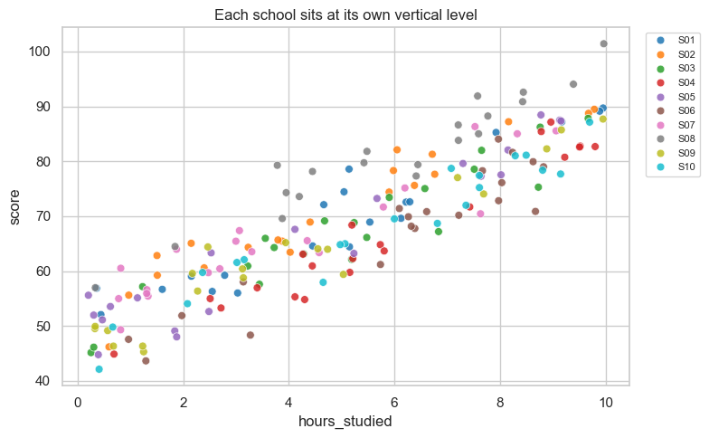
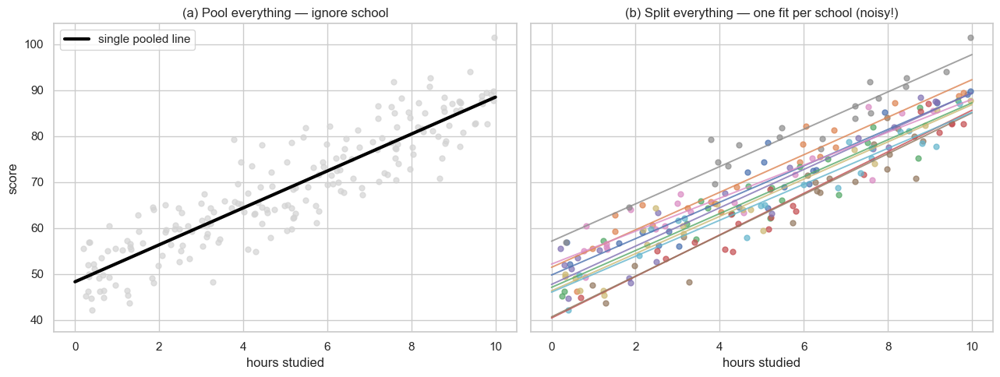
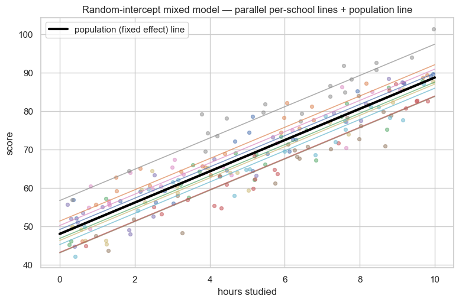
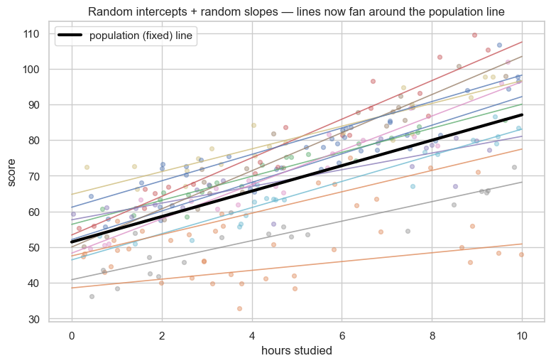
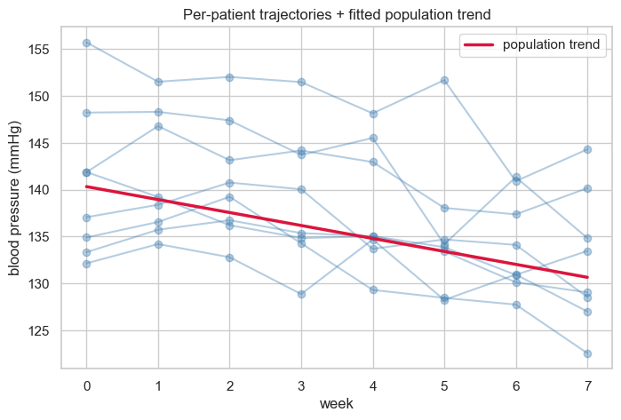

Linear Mixed Models — When Your Data Comes in Clusters¶
Data 200 · Applied Statistical Analysis · Instructor: Aayush Regmi
Every regression model we have built so far has quietly assumed that every row of the dataset is independent of every other row. That assumption holds for a clean random sample. It almost never holds for the data you'll see in real life:
- Students are nested inside classrooms, classrooms inside schools.
- Patients are measured multiple times over weeks of treatment.
- Plots of land sit inside the same farm, farms inside the same region.
In all three cases, observations within a cluster are correlated. Pretending otherwise — by running plain OLS — quietly inflates your false-positive rate and gives you confidence intervals that are too small.
Linear Mixed Models (LMMs) are the principled fix. They let us estimate a population-wide pattern (the fixed effect) while also acknowledging that each cluster has its own quirks (the random effect).
Learning Objectives¶
By the end of this notebook you'll be able to:
- Recognise clustered / hierarchical / repeated-measures data and explain why plain OLS misbehaves on it.
- Distinguish fixed effects (population-wide) from random effects (cluster-specific deviations).
- Fit a random-intercept mixed model with
statsmodels.mixedlmand read its summary. - Add random slopes when the predictor's effect itself varies between clusters.
- Compute the Intraclass Correlation Coefficient (ICC) and use it to decide whether a mixed model is needed.
- Apply mixed models to repeated measurements of the same unit over time.
- Know where Generalized Linear Mixed Models (GLMMs) fit in when the outcome is not Gaussian.
Setup¶
import numpy as np
import pandas as pd
import matplotlib.pyplot as plt
import seaborn as sns
import statsmodels.api as sm
import statsmodels.formula.api as smf
sns.set_theme(style="whitegrid")
plt.rcParams["figure.figsize"] = (8, 5)
rng = np.random.default_rng(7)
1. Why Plain OLS Isn't Enough for Clustered Data¶
Linear regression's standard errors and p-values rely on this assumption from the Linear Regression notebook:
Each observation \((x_i, y_i)\) is independent of every other.
Now think about a study of student exam scores from 10 schools. Two students from the same school share more than two students picked at random — same teachers, same neighbourhood, same facilities. Their residuals are correlated.
If you ignore that and run ols("score ~ hours") on the pooled data:
- Effective sample size is smaller than the row count suggests. 200 students from 10 schools carry less information than 200 unrelated students.
- Standard errors come out too small, so p-values are too small, so you find effects that aren't really there.
- Cluster-level patterns are invisible — "School C is unusually high" gets averaged into nothing.
Mixed models fix every one of these problems.
2. Two Tempting (But Wrong) First Attempts¶
When you first realise the data has clusters, two natural reflexes appear:
- Pool everything — fit one big regression, ignore which school each student is from. Loses the cluster structure entirely.
- Split everything — fit a separate regression per school. Now you have 10 little, noisy fits and no shared learning.
Mixed models walk a smart middle path: they share information across clusters (so each school's estimate is anchored to the overall trend) while still letting clusters differ from one another. Let's build the data first, then see all three approaches side by side.
Synthetic schools-and-students dataset¶
10 schools, 20 students each. Every school has its own intercept
shift (some schools just score higher, regardless of study habits).
The slope of score on hours_studied is the same in every school.
n_schools = 10
n_per_school = 20
true_slope = 4.0 # +4 marks per extra hour studied (population)
true_intercept = 50.0 # population baseline
school_sd = 6.0 # how much schools differ on average
noise_sd = 4.0 # within-school student-level noise
# Each school gets its own intercept shift drawn from N(0, school_sd^2)
school_offsets = rng.normal(scale=school_sd, size=n_schools)
rows = []
for s in range(n_schools):
hours = rng.uniform(0, 10, size=n_per_school)
score = (true_intercept + school_offsets[s]
+ true_slope * hours
+ rng.normal(scale=noise_sd, size=n_per_school))
rows.append(pd.DataFrame({
"school": f"S{s+1:02d}",
"hours_studied": hours,
"score": score,
}))
students = pd.concat(rows, ignore_index=True)
students.head()
| school | hours_studied | score | |
|---|---|---|---|
| 0 | S01 | 3.030324 | 56.008135 |
| 1 | S01 | 2.784256 | 59.233392 |
| 2 | S01 | 2.548696 | 56.288088 |
| 3 | S01 | 4.450763 | 64.575084 |
| 4 | S01 | 5.045483 | 74.432906 |
# Visualise the cluster structure
sns.scatterplot(data=students, x="hours_studied", y="score",
hue="school", palette="tab10", s=40, alpha=0.85)
plt.title("Each school sits at its own vertical level")
plt.legend(bbox_to_anchor=(1.02, 1), loc="upper left", fontsize=8)
plt.tight_layout(); plt.show()

Notice the colour bands stack at slightly different heights — that is the between-school variation that OLS will pretend doesn't exist.
The two failed approaches, plotted side by side¶
fig, axes = plt.subplots(1, 2, figsize=(13, 5), sharey=True)
# (a) Pool everything — one regression on all 200 students
pooled = smf.ols("score ~ hours_studied", data=students).fit()
x_grid = np.linspace(0, 10, 100)
axes[0].scatter(students["hours_studied"], students["score"],
c="lightgray", s=25, alpha=0.7)
axes[0].plot(x_grid,
pooled.params["Intercept"] + pooled.params["hours_studied"] * x_grid,
color="black", lw=3, label="single pooled line")
axes[0].set_title("(a) Pool everything — ignore school")
axes[0].set_xlabel("hours studied"); axes[0].set_ylabel("score")
axes[0].legend()
# (b) Split everything — one regression per school
for s, sub in students.groupby("school"):
fit = smf.ols("score ~ hours_studied", data=sub).fit()
axes[1].scatter(sub["hours_studied"], sub["score"], s=25, alpha=0.7)
axes[1].plot(x_grid,
fit.params["Intercept"] + fit.params["hours_studied"] * x_grid,
lw=1.4, alpha=0.8)
axes[1].set_title("(b) Split everything — one fit per school (noisy!)")
axes[1].set_xlabel("hours studied")
plt.tight_layout(); plt.show()

Approach (a) gives one tidy line but ignores the cluster structure entirely — its standard errors will be wrong. Approach (b) lets every school speak for itself but produces a noisy fan of lines, with no shared population estimate. We want both at once.
3. The Mixed-Model Idea¶
A linear mixed model splits the linear predictor into two layers:
with two independent random pieces:
- \(u_j \sim \mathcal{N}(0, \sigma_u^2)\) — every school has its own intercept shift, drawn from a normal centred at zero.
- \(\varepsilon_{ij} \sim \mathcal{N}(0, \sigma^2)\) — student-level residual noise.
Reading the pieces:
- Fixed effects — the things we want a single, generalisable estimate of (the population intercept and slope).
- Random effects — cluster-specific deviations that we don't want to estimate one-by-one. Instead, we estimate the distribution they came from (its variance \(\sigma_u^2\)).
This way, each school's estimate gets partially pulled toward the population mean, by an amount that depends on how much data the school has and how variable schools are overall. This partial pooling is exactly the smart middle path between approaches (a) and (b).
4. Random Intercepts — First Worked Example¶
We fit the model
In statsmodels this is a one-liner: mixedlm("score ~ hours_studied",
data, groups="school").
ri_model = smf.mixedlm("score ~ hours_studied",
data=students, groups=students["school"]).fit()
print(ri_model.summary())
Mixed Linear Model Regression Results
========================================================
Model: MixedLM Dependent Variable: score
No. Observations: 200 Method: REML
No. Groups: 10 Scale: 13.9569
Min. group size: 20 Log-Likelihood: -562.9300
Max. group size: 20 Converged: Yes
Mean group size: 20.0
--------------------------------------------------------
Coef. Std.Err. z P>|z| [0.025 0.975]
--------------------------------------------------------
Intercept 48.015 1.435 33.457 0.000 45.203 50.828
hours_studied 4.074 0.095 42.772 0.000 3.887 4.261
Group Var 17.605 2.364
========================================================
Reading the summary¶
Intercept— population baseline score whenhours_studied = 0. Compare with our true intercept of 50.hours_studied— fixed-effect slope. Compare with our true slope of 4.Group Var— estimated variance \(\hat\sigma_u^2\) between school intercepts. Its square root is the standard deviation between schools (compare with our trueschool_sd = 6).Scale— estimated within-school residual variance \(\hat\sigma^2\). Its square root is the within-school SD (compare withnoise_sd = 4).
print(f"True intercept : {true_intercept:.2f} fitted: {ri_model.fe_params['Intercept']:.2f}")
print(f"True slope : {true_slope:.2f} fitted: {ri_model.fe_params['hours_studied']:.2f}")
print(f"True school SD : {school_sd:.2f} fitted: {np.sqrt(ri_model.cov_re.iloc[0, 0]):.2f}")
print(f"True residual SD : {noise_sd:.2f} fitted: {np.sqrt(ri_model.scale):.2f}")
True intercept : 50.00 fitted: 48.02
True slope : 4.00 fitted: 4.07
True school SD : 6.00 fitted: 4.20
True residual SD : 4.00 fitted: 3.74
All four estimates are close to the truth. The mixed model has recovered the data-generating process — both the population trend and how much schools wiggle around it.
Visualising the partial-pooling fit¶
Each school's predicted line is the population line shifted by that school's random intercept. The bold black line is the population fit (fixed effect alone).
x_grid = np.linspace(0, 10, 100)
fixed_intercept = ri_model.fe_params["Intercept"]
fixed_slope = ri_model.fe_params["hours_studied"]
# Random intercepts per school
re = ri_model.random_effects # dict: school → Series with one entry 'Group'
plt.figure(figsize=(9, 5.5))
for school, sub in students.groupby("school"):
plt.scatter(sub["hours_studied"], sub["score"], s=18, alpha=0.5)
intercept_j = fixed_intercept + re[school]["Group"]
plt.plot(x_grid, intercept_j + fixed_slope * x_grid,
lw=1.2, alpha=0.7)
plt.plot(x_grid, fixed_intercept + fixed_slope * x_grid,
color="black", lw=3, label="population (fixed effect) line")
plt.xlabel("hours studied"); plt.ylabel("score")
plt.title("Random-intercept mixed model — parallel per-school lines + population line")
plt.legend(); plt.show()

Notice the per-school lines are parallel — the random-intercept model lets each school start at its own height but assumes the effect of an extra hour studied is the same everywhere. What if that's wrong?
5. Random Slopes — When the Effect Itself Varies by Cluster¶
Some schools may amplify the benefit of studying (great study halls, supportive teachers) while others dampen it. The model that captures this is
where \((u_{0j}, u_{1j})\) are drawn jointly from a 2-D normal. In
statsmodels we add re_formula="~ hours_studied":
# A new dataset where slopes really do vary by school
n_schools, n_per = 12, 20
true_intercept, true_slope = 50.0, 4.0
intercept_sd, slope_sd, noise_sd2 = 6.0, 1.5, 4.0
u0 = rng.normal(scale=intercept_sd, size=n_schools) # intercept offsets
u1 = rng.normal(scale=slope_sd, size=n_schools) # slope offsets
rows = []
for s in range(n_schools):
hours = rng.uniform(0, 10, size=n_per)
score = (true_intercept + u0[s]
+ (true_slope + u1[s]) * hours
+ rng.normal(scale=noise_sd2, size=n_per))
rows.append(pd.DataFrame({
"school": f"S{s+1:02d}",
"hours_studied": hours,
"score": score,
}))
students2 = pd.concat(rows, ignore_index=True)
rs_model = smf.mixedlm(
"score ~ hours_studied",
data=students2,
groups=students2["school"],
re_formula="~ hours_studied",
).fit(method="lbfgs")
print(rs_model.summary())
Mixed Linear Model Regression Results
====================================================================
Model: MixedLM Dependent Variable: score
No. Observations: 240 Method: REML
No. Groups: 12 Scale: 15.6629
Min. group size: 20 Log-Likelihood: -718.2268
Max. group size: 20 Converged: No
Mean group size: 20.0
--------------------------------------------------------------------
Coef. Std.Err. z P>|z| [0.025 0.975]
--------------------------------------------------------------------
Intercept 51.458 2.829 18.188 0.000 45.913 57.004
hours_studied 3.564 0.590 6.040 0.000 2.407 4.720
Group Var 92.775 17.774
Group x hours_studied Cov 3.348 6.793
hours_studied Var 4.071
====================================================================
/Users/aayush/micromamba/envs/stats/lib/python3.10/site-packages/statsmodels/base/model.py:607: ConvergenceWarning: Maximum Likelihood optimization failed to converge. Check mle_retvals
warnings.warn("Maximum Likelihood optimization failed to "
/Users/aayush/micromamba/envs/stats/lib/python3.10/site-packages/statsmodels/regression/mixed_linear_model.py:2206: ConvergenceWarning: MixedLM optimization failed, trying a different optimizer may help.
warnings.warn(msg, ConvergenceWarning)
/Users/aayush/micromamba/envs/stats/lib/python3.10/site-packages/statsmodels/regression/mixed_linear_model.py:2218: ConvergenceWarning: Gradient optimization failed, |grad| = 13.424993
warnings.warn(msg, ConvergenceWarning)
/Users/aayush/micromamba/envs/stats/lib/python3.10/site-packages/statsmodels/regression/mixed_linear_model.py:2261: ConvergenceWarning: The Hessian matrix at the estimated parameter values is not positive definite.
warnings.warn(msg, ConvergenceWarning)
The summary now shows two random-effect variances — one for the intercept and one for the slope — plus their covariance. The fixed slope (≈ 4) is the average effect of an extra study hour; some schools beat that, others fall short.
fixed_intercept = rs_model.fe_params["Intercept"]
fixed_slope = rs_model.fe_params["hours_studied"]
re = rs_model.random_effects
x_grid = np.linspace(0, 10, 100)
plt.figure(figsize=(9, 5.5))
for school, sub in students2.groupby("school"):
plt.scatter(sub["hours_studied"], sub["score"], s=18, alpha=0.4)
int_j = fixed_intercept + re[school]["Group"]
slope_j = fixed_slope + re[school]["hours_studied"]
plt.plot(x_grid, int_j + slope_j * x_grid, lw=1.2, alpha=0.75)
plt.plot(x_grid, fixed_intercept + fixed_slope * x_grid,
color="black", lw=3, label="population (fixed) line")
plt.xlabel("hours studied"); plt.ylabel("score")
plt.title("Random intercepts + random slopes — lines now fan around the population line")
plt.legend(); plt.show()

The lines no longer have to be parallel. Each school is allowed to deviate both in baseline and in slope — but they are still pulled toward the population trend rather than fitted in isolation.
6. ICC — How Clustered Are the Data?¶
Before reaching for a mixed model, it's worth asking: do my data really cluster, or is plain OLS fine? The standard summary number is the Intraclass Correlation Coefficient (ICC):
It's the share of total variation that lives between clusters rather than within them. ICC = 0 means "no clustering, OLS is fine." ICC = 1 means "all variation is between clusters." Rule of thumb: anything above ~0.05 is worth a mixed model.
var_school = float(ri_model.cov_re.iloc[0, 0])
var_residual = float(ri_model.scale)
icc = var_school / (var_school + var_residual)
print(f"Between-school variance: {var_school:.2f}")
print(f"Within-school variance : {var_residual:.2f}")
print(f"ICC : {icc:.3f}")
print(f"=> {icc:.0%} of the variation in scores is between schools — mixed model justified.")
Between-school variance: 17.60
Within-school variance : 13.96
ICC : 0.558
=> 56% of the variation in scores is between schools — mixed model justified.
7. Repeated-Measures Example — Patient Blood Pressure¶
Mixed models shine for repeated measurements where the same subject is observed multiple times. Each subject is a cluster.
30 patients on a new blood-pressure medication, measured weekly for 8 weeks. The drug lowers BP on average, but each patient starts at their own baseline.
n_patients = 30
weeks = np.arange(0, 8)
true_baseline = 140.0 # mean starting BP
true_week_effect = -1.5 # average drop per week
patient_sd = 8.0 # how much patients differ in baseline
noise_sd_bp = 3.0
patient_offsets = rng.normal(scale=patient_sd, size=n_patients)
rows = []
for p in range(n_patients):
bp = (true_baseline + patient_offsets[p]
+ true_week_effect * weeks
+ rng.normal(scale=noise_sd_bp, size=len(weeks)))
rows.append(pd.DataFrame({
"patient": f"P{p+1:02d}",
"week": weeks,
"bp": bp,
}))
bp_data = pd.concat(rows, ignore_index=True)
bp_data.head()
| patient | week | bp | |
|---|---|---|---|
| 0 | P01 | 0 | 137.067279 |
| 1 | P01 | 1 | 138.391783 |
| 2 | P01 | 2 | 140.761139 |
| 3 | P01 | 3 | 140.044204 |
| 4 | P01 | 4 | 133.686686 |
bp_model = smf.mixedlm("bp ~ week", data=bp_data,
groups=bp_data["patient"]).fit()
print(bp_model.summary())
Mixed Linear Model Regression Results
========================================================
Model: MixedLM Dependent Variable: bp
No. Observations: 240 Method: REML
No. Groups: 30 Scale: 8.5064
Min. group size: 8 Log-Likelihood: -655.9125
Max. group size: 8 Converged: Yes
Mean group size: 8.0
--------------------------------------------------------
Coef. Std.Err. z P>|z| [0.025 0.975]
--------------------------------------------------------
Intercept 140.327 1.381 101.638 0.000 137.621 143.033
week -1.383 0.082 -16.830 0.000 -1.544 -1.222
Group Var 53.642 5.256
========================================================
# Spaghetti plot: 8 random patients + the population trend
show = rng.choice(bp_data["patient"].unique(), size=8, replace=False)
for p in show:
sub = bp_data[bp_data["patient"] == p]
plt.plot(sub["week"], sub["bp"], color="steelblue", alpha=0.4, marker="o")
x_grid = np.linspace(0, 7, 100)
fix_b0, fix_b1 = bp_model.fe_params["Intercept"], bp_model.fe_params["week"]
plt.plot(x_grid, fix_b0 + fix_b1 * x_grid,
color="crimson", lw=2.5, label="population trend")
plt.xlabel("week"); plt.ylabel("blood pressure (mmHg)")
plt.title("Per-patient trajectories + fitted population trend")
plt.legend(); plt.show()

Each patient's trajectory threads through their own typical level,
but the overall downward trend is the fixed effect that the drug
trial actually cares about. A simple ols("bp ~ week") would have
treated each weekly measurement as independent — a 30 × 8 = 240-row
study — and overstated the precision of the slope.
8. Mixed Models vs. ANOVA / ANCOVA¶
ANOVA treats each group as a fixed category — every level of the factor is a hard-coded coefficient in the design matrix. That's the right move when you have a small number of groups and you want to talk about each one specifically.
Mixed models treat the grouping variable as a random draw from a wider population of possible clusters. That's the right move when:
- The clusters are not the focus themselves (you don't really care about "School #07 vs. School #08" — you care about the population trend across some sample of schools).
- The same units are measured repeatedly over time.
- You want to generalise beyond the specific clusters in your sample.
Rule of thumb: handful of named groups → ANOVA-style fixed effects. Many clusters that are samples from a wider population → random effects.
9. Assumptions, Gotchas, and the GLMM Teaser¶
Assumptions¶
- Random effects are normally distributed with mean zero. Plot a
histogram of the estimated
random_effectsto sanity-check. - Linearity of the fixed effects. Same as plain regression.
- Residuals are normal with constant variance.
- Enough clusters to estimate the random-effect variance — informal rule of thumb is at least 5–10 clusters, more is better. With only 2–3 clusters, treat them as fixed effects instead.
Common gotchas¶
- Convergence warnings from
statsmodelsusually mean a random effect has near-zero variance — try dropping it (e.g. fit random-intercept-only instead of intercept + slope). - Singular fits (
Group Varreported as 0) often show up when the true between-cluster variance really is small. The data is telling you that ordinary regression would also be fine here. - Random vs. fixed interpretation. Don't read individual random effects as if they were fixed-effect coefficients — they have been shrunk toward zero by the mixed model. They are predictions, not tests.
Where to next — GLMMs¶
Everything above assumed a Normal outcome. What if your outcome is binary (did the patient relapse?), count (how many doctor visits?), or skewed positive (waiting time)? You combine the GLM machinery with random effects to get a Generalized Linear Mixed Model (GLMM):
where \(g(\cdot)\) is the same link function from the GLM notebook —
logit for binary outcomes, log for counts. In Python, look at
statsmodels.genmod.bayes_mixed_glm.BinomialBayesMixedGLM or the
popular pymer4 and bambi packages. The intuition stays the same:
a population pattern plus cluster-specific random shifts.
10. Key Takeaways¶
- Plain OLS assumes independent rows. Clustered, hierarchical, or repeated-measures data violates this and gives p-values that are too small.
- A linear mixed model splits the predictor into fixed effects (population pattern) and random effects (cluster-specific deviations drawn from a normal distribution).
- Random intercepts let each cluster sit at its own level; random slopes let the predictor's effect itself vary by cluster.
- Partial pooling is the magic — each cluster's estimate is pulled toward the population mean, smarter than "pool everything" or "split everything."
- The ICC quantifies how clustered the data are; above ~0.05 a mixed model is worth it.
- In
statsmodels, fitting one is a one-liner:smf.mixedlm(formula, data, groups=cluster_col, re_formula=...).fit(). - For non-Gaussian outcomes (binary, count, etc.), the same idea extends to Generalized Linear Mixed Models (GLMMs).
11. Practice Exercises¶
- Random-intercept on farms. Synthesise a dataset of 8 farms, each with 25 plots. Each farm has its own baseline soil quality (random intercept). The fixed effect of interest is fertilizer amount on yield. Fit the model and report the population slope.
- Add a random slope to the BP example. Modify the §7
simulation so each patient has their own response rate to the
medication (some respond more, some less). Fit
mixedlm("bp ~ week", data, groups="patient", re_formula="~ week")and compare against the random-intercept-only fit. - ICC for a third dataset. Build a synthetic dataset of 15 classrooms × 30 students where between-classroom variance is small compared to within. Compute the ICC and decide whether a mixed model is justified.